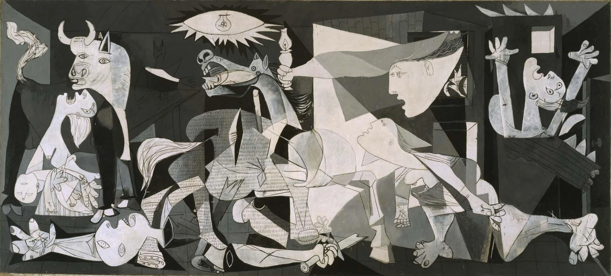
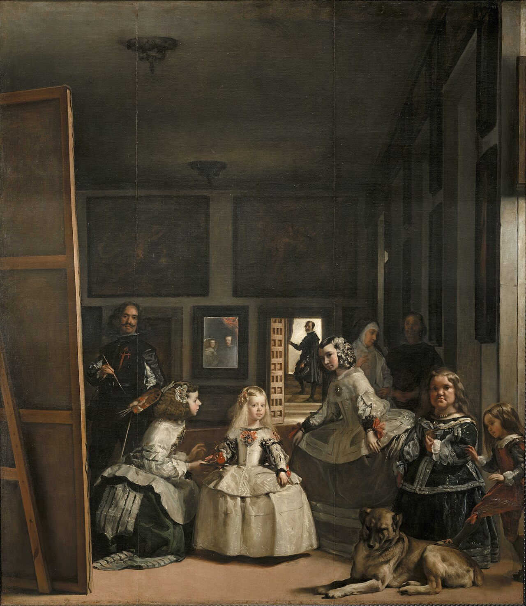

El Guernica

Es un cuadro de Pablo Picasso, pintado en París entre los meses de mayo y junio de 1937, cuyo título alude al bombardeo de Guernica, ocurrido el 26 de abril de dicho año, durante la guerra civil española.
Las Meninas

Se considera la obra maestra del pintor del Siglo de Oro español Diego Velázquez. Acabado en 1656, según Antonio Palomino, fecha unánimemente aceptada por la crítica, corresponde al último periodo estilístico del artista, el de plena madurez.
La Noche Estrellada

Es un óleo sobre lienzo del pintor postimpresionista neerlandés Vincent van Gogh. Pintado en junio de 1889, representa la vista desde la ventana orientada al este de su habitación en el asilo en Saint-Rémy-de-Provence, justo antes del amanecer, donde incluye un pueblo imaginario.